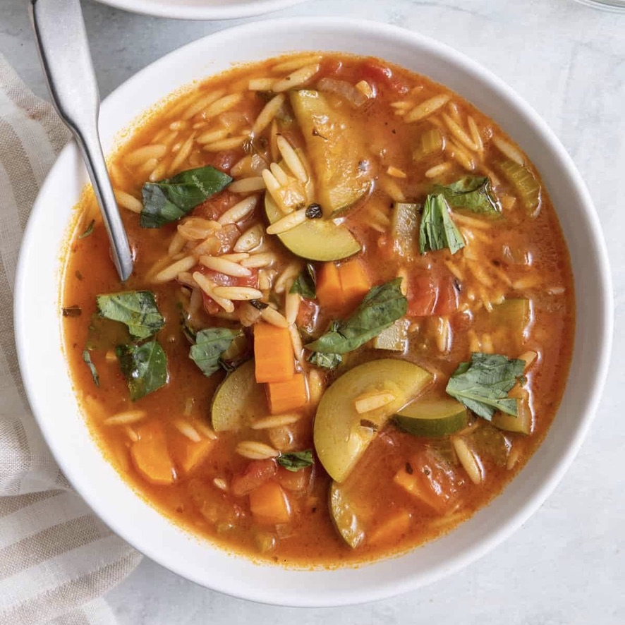

Zucchini Orzo Soup
If you have been looking for an easy, delicious, and healthy soup recipe, look no further than this vegan/vegetarian orzo soup with zucchini and vegetables. It is hearty, flavorful, and filling. Plus, it is packed with nutrients and vitamins. The zucchini and carrots are cooked down to the perfect tenderness, and the orzo pasta adds a nice hearty element to the soup. The tomatoes add a touch of acidity and sweetness and the herbs give the soup a beautiful flavor. This soup is truly a powerhouse of flavor and nutrition!
PREP. TIME: 15 min. | COOK TIME: 40 min. | SERVINGS: 6 servings
FINAL STEP: Top with fresh basil and you're ready to serve!
Leftover orzo soup can be stored in an airtight container in the fridge. When you are ready to eat, reheat the soup on the stove over medium heat until warmed through. You may need to add a splash of water or broth if the soup has thickened too much.
Definitely. If you want a grain-free version of the soup, simply omit the orzo and the soup will still be delicious.
Orzo soup will last in the fridge for about three days. After that, the orzo will start to break down, and the soup will become mushy.
It is not recommended to freez this soup because the orzo does not hold up well when frozen. The pasta will become mushy and less enjoyable to eat. If you do choose to freeze it, make the base minus the zucchini and the orzo and just add them when you are ready to eat.
If your orzo came out mushy, it is likely because it was overcooked. Orzo only takes about 10 minutes to cook, so be sure not to add it to the soup until right before you are ready to eat. The cooking process will continue even when you remove it from the heat.
N.B. Nutrition information provided is an estimate. It will vary based on cooking method and specific ingredients used.